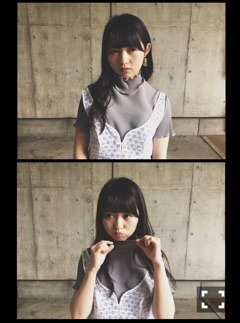
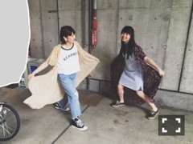

| 2016/06 05 Sun | ふくといきる。717回目 |

14th最後の握手会
来てくださったみなさん
ありがとうございましたーーー！！
こんなに見ててくれてるんだな
って改めて実感して、感謝して、
よし頑張ろうと思える会。
みんないつもありがとう。
まいまいにとって最後の握手会でした。
卒業セレモニー参加したよ！

kotohayokozawaに
usedのワンピース、
と、KLOKAのイヤリング

ガウン人
ロング丈って落ち着くんだよね∠( 'ω')／
これは真ん中を裂いてガウンにしました。
私服を衣装として見せることは、
着回しについて深く考えるようになる。
中途半端丈でぼてっとしたシルエットの
サファリなワンピース。
よくわからない地図とよくわからない動物。
GAIMOのシューズはたしか
お母さんが黒に染めたやつ。
ほんとは白かったはず。
スペシャルイベントや
Mステ、46時間TV、制作、ライブと
来週から相当盛りだくさんなので、
体調に気をつけて頑張ります。
あっという間に14th期間が過ぎました。
2ndアルバムの発売もあっという間に！
次から次へといろんなものが押し寄せてくる
果たして私はついていけてるのか
グループの動きと同じように
私自身の動きを大きくしていくことが
6月からの課題。というか達成しなきゃね。
ひとつひとつ、小さいことでも。
できる気がする！と思っていた方がいい。
映像！映像！映像！写真！服！

メンズジョーカーウォッチ発売中
6月4日 月刊MdN
6月15日 BRODY
6月24日 Street Jack
6月28日 装苑
まだ言えないけど、
今ちょっと面白いことやってます。
なかなか楽しいです。
やっぱ制作というものが好きみたいです。
頭の中にあるものが
かたちになっていくっていいな。
詳しいこととか全然わからないけど、
やってて楽しいから好き。
撮影頑張りますん
まりか
コメント(496)
2016/06/05 10:54